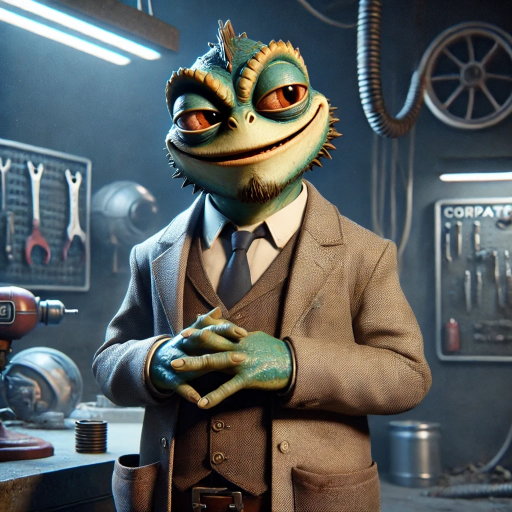

Chapter 6
Madness ensues
A new voice cut through the chaos.
"WHAT. THE. HELL. IS GOING ON IN HERE?!"
Galek froze.
Oh no.
Oh no-no-no.
It was Mr. Grint, his landlord.

Unfortunately for Galek, there was no time to fight the narrator further-because the gremlin was still loose, and now his rent-hungry landlord had just walked in.
The moment Mr. Grint laid eyes on the tiny, soot-covered menace, something greedy and opportunistic flickered behind his beady, predatory eyes.
"Oh-ho! What do we have here?"
Galek stiffened. "Uh, nothing. Absolutely nothing. It's fine. Everything is fine."
"That," Grint said, pointing at the gremlin, "isn't just an infestation. That's a BUSINESS OPPORTUNITY."
Galek's stomach dropped. Oh no. Oh no-no-no.
Grint grinned like a scavenger spotting an unguarded buffet. "We can SELL that thing."
The gremlin paused mid-ceiling-climb. "Excuse me?"
Grint rubbed his hands together. "I bet we could market it as 'High-Tech Organic Ship Security.' Rich folks LOVE exotic lifeforms. We'll say it's a state-of-the-art alarm system!"
The gremlin crossed its arms. "First of all? RUDE. Second of all? I demand royalties."
Galek pinched the bridge of his nose. "Grint, please. You can't just-"
"Zim." Grint clapped a hand on his shoulder. "Let's be real. You're three weeks late on rent."
Galek tensed. "I told you, I'll have the credits soon!"
Grint grinned wider. "Well, here's an easy solution. Sell the gremlin, and I'll forget about the rent for a whole month."
Galek blinked. "…A month?"
Grint nodded. "Yup. One whole month. Debt erased."
Galek stared at him. "One month? That's IT?!"
Grint shrugged. "Hey, it's a really good month."
The gremlin snorted. "Wow. That's a scam, buddy."
Galek pinched the bridge of his nose. "Okay. New plan."